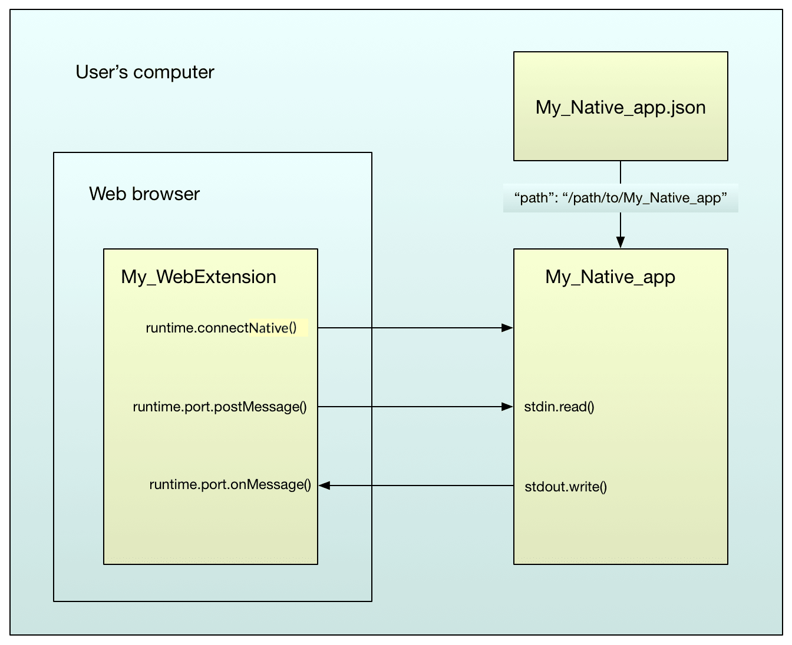

Native messaging enables an extension to exchange messages with a native application, installed on the user's computer. The native messaging serves the extensions without additional accesses over the web.
Password managers: The native application manages, stores, and encrypts passwords. Then the native application communicates with the extension to populate web forms.
Native messaging also enables extensions to access resources that are not accessible through WebExtension APIs (e.g, particular hardwares).
The native application is not installed or managed by the browser. The native application is installed, using the underlying operating system's installation machinery. Create a JSON file called the "host manifest" or "app manifest". Install the JSON file in a defined location. The app manifest fill will describe how the browser can connect to the native application.
The extension must request the "nativeMessaging" permission in the manifest.json file. Also, the native application must grant permission for the extension by including the ID in the "allowed_extensions" field of the app manifest.
After installing, the extension can exchange JSON messages with the native application. Use a set of functions in the {{WebExtAPIRef("runtime")}} API. On the native app side, messages are received using standard input (stdin) and sent using standard output (stdout).

Support for native messaging in extensions is mostly compatible with Chrome, with two main differences:
allowed_extensions as an array of app IDs, while Chrome lists allowed_origins, as an array of "chrome-extension" URLs.There's a complete example in the "native-messaging" directory of the "webextensions-examples" repository on GitHub. Most example code in this article is taken from that example.
Extension communicating with a native application:
"nativeMessaging" permission in the manifest.json file.browser_specific_settings manifest key. (The app's manifest will identify the set of extensions that allow connecting to the IDs).Example manifest.json file:
{
"description": "Native messaging example add-on",
"manifest_version": 2,
"name": "Native messaging example",
"version": "1.0",
"icons": {
"48": "icons/message.svg"
},
"browser_specific_settings": {
"gecko": {
"id": "ping_pong@example.org",
"strict_min_version": "50.0"
}
},
"background": {
"scripts": ["background.js"]
},
"browser_action": {
"default_icon": "icons/message.svg"
},
"permissions": ["nativeMessaging"]
}
Note: Chrome does not support the browser_specific_settings key. You will need to use another manifest without this key to install an equivalent WebExtension on Chrome. See Chrome incompatibilities below.
The app manifest describes to the browser how it can connect to the native application.
The app manifest file must be installed along with the native application. The browser reads and validates app manifest files, but it does not install or manage them. The security model for when and how these files are installed and updated is much more like that for native applications than that for extensions using WebExtension APIs.
For details of native app manifest syntax and location, see Native manifests.
For example, here's a manifest for the "ping_pong" native application:
{
"name": "ping_pong",
"description": "Example host for native messaging",
"path": "/path/to/native-messaging/app/ping_pong.py",
"type": "stdio",
"allowed_extensions": [ "ping_pong@example.org" ]
}
This allows the extension whose ID is "ping_pong@example.org" to connect, by passing the name "ping_pong" into the relevant {{WebExtAPIRef("runtime")}} API function. The application itself is at "/path/to/native-messaging/app/ping_pong.py".
Note: Chrome identifies allowed extensions with another key: allowed_origins, using the ID of the WebExtension. Refer to Chrome documentation for more details and see Chrome incompatibilities below.
As an example, you can also refer to the readme on the native messaging extension on GitHub. If you want to check your local setup after having forked this repository on a Windows machine, you may run check_config_win.py to troubleshoot some issues.
In the example above, the native application is a Python script. It can be difficult to get Windows to run Python scripts reliably in this way, so an alternative is to provide a .bat file, and link to that from the application's manifest:
{
"name": "ping_pong",
"description": "Example host for native messaging",
"path": "c:\\path\\to\\native-messaging\\app\\ping_pong_win.bat",
"type": "stdio",
"allowed_extensions": [ "ping_pong@example.org" ]
}
(See note above about Chrome compatibility regarding the allowed_extensions key and its counterpart in Chrome).
The batch file then invokes the Python script:
@echo off python -u "c:\\path\\to\\native-messaging\\app\\ping_pong.py"
The browser finds the extension based on registry keys which are located in a specific location. You need to add them either programmatically with your final application or manually if you are using the example from GitHub. For more details, refer to Manifest location.
Following with the ping_pong example, if using Firefox (see this page for Chrome), two registry entries should be created for the messaging to work:
HKEY_CURRENT_USER\Software\Mozilla\NativeMessagingHosts\ping_pong
C:\Users\<myusername>\webextensions-examples\native-messaging\app\ping_pong.jsonHKEY_LOCAL_MACHINE\Software\Mozilla\NativeMessagingHosts\ping_pong
Note: If you base your work on the example located on GitHub, please read this part of the readme and check the output of check_config_win.py before installing the WebExtension on your browser.
Given the above setup, an extension can exchange JSON messages with a native application.
Native messaging cannot directly be used in content scripts. You must do it indirectly via background scripts.
There are two patterns to use here: connection-based messaging and connectionless messaging.
With this pattern you call {{WebExtAPIRef("runtime.connectNative()")}}, passing the name of the application (the value of the "name" property in the app's manifest). This launches the application if it is not already running and returns a {{WebExtAPIRef("runtime.Port")}} object to the extension.
Two arguments are passed to the native app when it starts:
manifest.json key) of the add-on that started it.Chrome handles the passed arguments differently:
chrome-extension://[extensionID]). This enables the app to identify the extension.The application stays running until the extension calls Port.disconnect() or the page that connected to it is closed.
To send messages using Port, call its postMessage() function, passing the JSON message to send. To listen for messages using Port, add the listener using its onMessage.addListener() function.
Here's an example background script that establishes a connection with the "ping_pong" app, listens for messages from it, then sends it a "ping" message whenever the user clicks the browser action:
/*
On startup, connect to the "ping_pong" app.
*/
var port = browser.runtime.connectNative("ping_pong");
/*
Listen for messages from the app.
*/
port.onMessage.addListener((response) => {
console.log("Received: " + response);
});
/*
On a click on the browser action, send the app a message.
*/
browser.browserAction.onClicked.addListener(() => {
console.log("Sending: ping");
port.postMessage("ping");
});
With this pattern you call {{WebExtAPIRef("runtime.sendNativeMessage()")}}, passing it:
A new instance of the app is created for each message. The app passes two arguments when starting:
The first message sent by the app is treated as a response to the sendNativeMessage() call, and will be passed into the callback.
Here's the example above, rewritten to use runtime.sendNativeMessage():
function onResponse(response) {
console.log("Received " + response);
}
function onError(error) {
console.log(`Error: ${error}`);
}
/*
On a click on the browser action, send the app a message.
*/
browser.browserAction.onClicked.addListener(() => {
console.log("Sending: ping");
var sending = browser.runtime.sendNativeMessage(
"ping_pong",
"ping");
sending.then(onResponse, onError);
});
On the application side, you use standard input to receive messages and standard output to send them.
Each message is serialized using JSON, UTF-8 encoded and is preceded with a 32-bit value containing the message length in native byte order.
The maximum size of a single message from the application is 1 MB. The maximum size of a message sent to the application is 4 GB.
You can quickly get started sending and receiving messages with this NodeJS code:
#!/usr/local/bin/node
(() => {
let payloadSize = null;
// A queue to store the chunks as we read them from stdin.
// This queue can be flushed when `payloadSize` data has been read
let chunks = [];
// Only read the size once for each payload
const sizeHasBeenRead = () => Boolean(payloadSize);
// All the data has been read, reset everything for the next message
const flushChunksQueue = () => {
payloadSize = null;
chunks.splice(0);
};
const processData = () => {
// Create one big buffer with all all the chunks
const stringData = Buffer.concat(chunks);
// The browser will emit the size as a header of the payload,
// if it hasn't been read yet, do it.
// The next time we'll need to read the payload size is when all of the data
// of the current payload has been read (ie. data.length >= payloadSize + 4)
if (!sizeHasBeenRead()) {
payloadSize = stringData.readUInt32LE(0);
}
// If the data we have read so far is >= to the size advertised in the header,
// it means we have all of the data sent.
// We add 4 here because that's the size of the bytes that old the payloadSize
if (stringData.length >= (payloadSize + 4)) {
// Remove the header
const contentWithoutSize = stringData.slice(4, (payloadSize + 4));
// Reset the read size and the queued chunks
flushChunksQueue();
const json = JSON.parse(contentWithoutSize);
// Do something with the data...
}
};
process.stdin.on('readable', () => {
// A temporary variable holding the nodejs.Buffer of each
// chunk of data read off stdin
let chunk = null;
// Read all of the available data
while ((chunk = process.stdin.read()) !== null) {
chunks.push(chunk);
}
processData();
});
})();
Here's another example written in Python. It listens for messages from the extension. Note that the file has to be executable on Linux. If the message is "ping", then it responds with a message "pong".
This is the Python 2 version:
#!/usr/bin/python -u
# Note that running python with the `-u` flag is required on Windows,
# in order to ensure that stdin and stdout are opened in binary, rather
# than text, mode.
import json
import sys
import struct
# Read a message from stdin and decode it.
def get_message():
raw_length = sys.stdin.read(4)
if not raw_length:
sys.exit(0)
message_length = struct.unpack('=I', raw_length)[0]
message = sys.stdin.read(message_length)
return json.loads(message)
# Encode a message for transmission, given its content.
def encode_message(message_content):
encoded_content = json.dumps(message_content)
encoded_length = struct.pack('=I', len(encoded_content))
return {'length': encoded_length, 'content': encoded_content}
# Send an encoded message to stdout.
def send_message(encoded_message):
sys.stdout.write(encoded_message['length'])
sys.stdout.write(encoded_message['content'])
sys.stdout.flush()
while True:
message = get_message()
if message == "ping":
send_message(encode_message("pong"))
In Python 3, the received binary data must be decoded into a string. The content to be sent back to the addon must be encoded into binary data using a struct:
#!/usr/bin/python -u
# Note that running python with the `-u` flag is required on Windows,
# in order to ensure that stdin and stdout are opened in binary, rather
# than text, mode.
import json
import sys
import struct
# Read a message from stdin and decode it.
def get_message():
raw_length = sys.stdin.buffer.read(4)
if not raw_length:
sys.exit(0)
message_length = struct.unpack('=I', raw_length)[0]
message = sys.stdin.buffer.read(message_length).decode("utf-8")
return json.loads(message)
# Encode a message for transmission, given its content.
def encode_message(message_content):
encoded_content = json.dumps(message_content).encode("utf-8")
encoded_length = struct.pack('=I', len(encoded_content))
# use struct.pack("10s", bytes), to pack a string of the length of 10 characters
return {'length': encoded_length, 'content': struct.pack(str(len(encoded_content))+"s",encoded_content)}
# Send an encoded message to stdout.
def send_message(encoded_message):
sys.stdout.buffer.write(encoded_message['length'])
sys.stdout.buffer.write(encoded_message['content'])
sys.stdout.buffer.flush()
while True:
message = get_message()
if message == "ping":
send_message(encode_message("pong"))
If you connected to the native application using runtime.connectNative(), then it stays running until the extension calls Port.disconnect() or the page that connected to it is closed. If you started the native application by sending runtime.sendNativeMessage(), then it is closed after it has received the message and sent a response.
To close the native application:
SIGTERM to the native application, then SIGKILL after the application has had a chance to exit gracefully. These signals propagate to any subprocesses unless they break away into a new process group.CREATE_BREAKAWAY_FROM_JOB flag.If something goes wrong, check the browser console. If the native application sends any output to stderr, the browser will redirect it to the browser console. So if you've got as far as launching the native application, you will see any error messages it emits.
If you haven't managed to run the application, you should see an error message giving you a clue about the problem.
"No such native application <name>"
runtime.connectNative() matches the name in the app manifest<name>.json."Error: Invalid application <name>"
"'python' is not recognized as an internal or external command, ..."
"File at path <path> does not exist, or is not executable"
"c:\\path\\to\\file")."path" property in the app's manifest."This extension does not have permission to use native application <name>"
"allowed_extensions" key in the app manifest contains the add-on's ID."TypeError: browser.runtime.connectNative is not a function"
"nativeMessaging" permission"[object Object] NativeMessaging.jsm:218"
{{Page("Mozilla/Add-ons/WebExtensions/Chrome_incompatibilities", "Native_messaging")}}